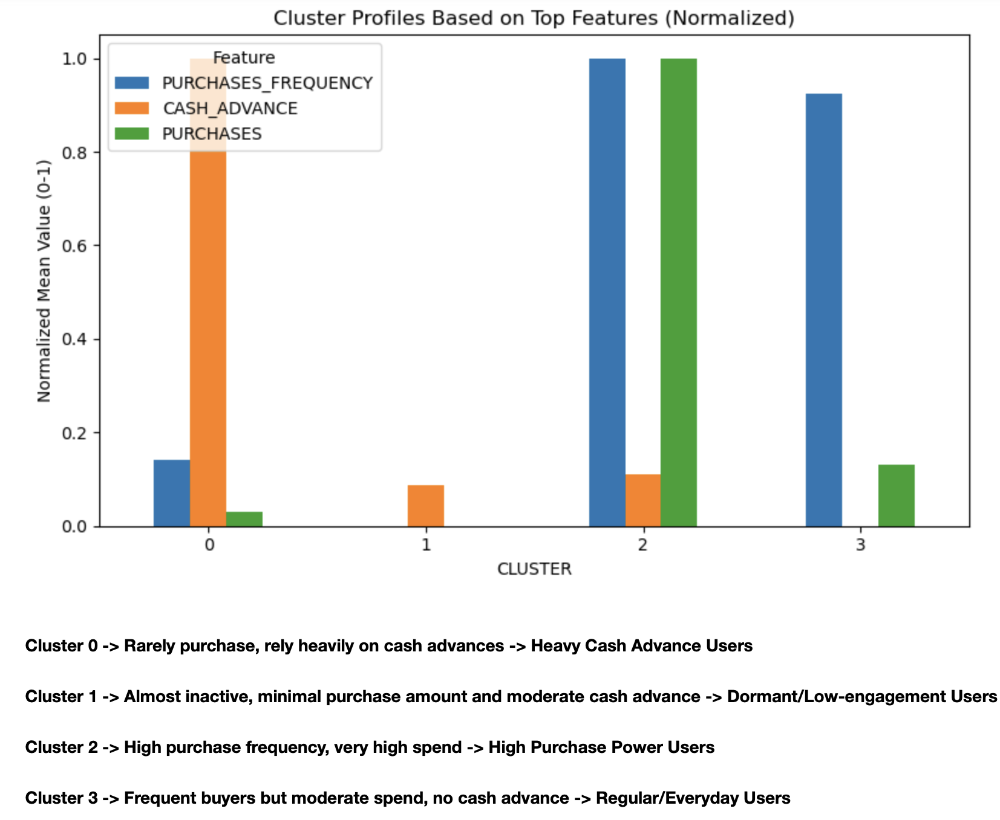
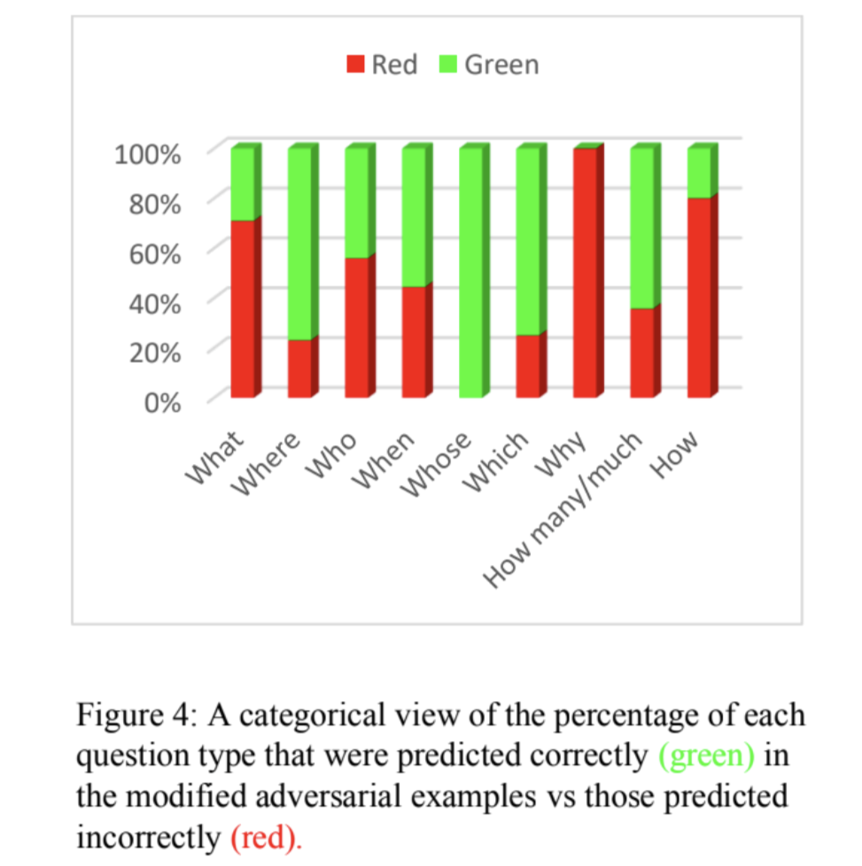

Daily Automated ETL Pipeline with Python, Apache Airflow, Docker & PostgreSQL
Designed and deployed a daily automated ETL pipeline using Python, Apache Airflow,Docker and PostgreSQL, improving data reliability and reducing manual workload by 40%. Developed Python scripts to extract, transform, and load Amazon's books data, orchestrated workflows with Airflow DAGs, and deployed using Docker to ensure timely data availability for analytics.
 View on GitHub
View on GitHub
Real-Time ETL Pipeline with Python, Apache Kafka & AWS Services
Built a near real-time data pipeline using Python, Apache Kafka, AWS Glue, and Athena, enabling faster analytics and a 30% boost in decision-making speed. Implemented Python producers/consumers to stream stock market and transactional data into Kafka topics, automated schema inference and transformation with Glue, and enabled low-latency querying with Athena.
 View on GitHub
View on GitHub
Health Insurance Charge Prediction Using Linear Regression and Random Forest Regressor
Problem Type: Regression
Built regression models using Linear Regression and Random Forest Regressor to predict health insurance charges based on demographic and lifestyle factors. Compared model performance and achieved improved prediction accuracy, enabling more precise premium estimates.
 View on GitHub
View on GitHub
Sentiment Analysis on Amazon Alexa Reviews Using Decision Tree, Random Forest, and XGBoost
Problem Type: Natural Language Processing – Binary Classification
Performed sentiment analysis on Amazon's Alexa products using Decision Tree, Random Forest, and XGBoost to classify customer reviews as positive or negative. Applied feature engineering and model evaluation to identify key factors influencing customer sentiment.
View on GitHub
Food Image Classification Using TensorFlow (Keras) Convolutional Neural Network
Problem Type: Image Classification
Built a Convolutional Neural Network (CNN) using TensorFlow/Keras to classify food images into categories like pizza, burger, taco, cheesecake, and fries. Achieved over 90% test accuracy and visualized predictions to evaluate model performance.
 View on GitHub
View on GitHub
Customer Segmentation on Credit Card Dataset Using K-Means Clustering and Decision Tree
Problem Type: Unsupervised Learning – Clustering
Used K-Means Clustering, Decision Tree, and PCA to segment ~9,000 active credit cardholders based on usage behavior over six months. Applied PCA for dimensionality reduction, K-Means for cluster discovery, and Decision Trees to interpret key features driving customer segments.

View on GitHub
Movie Recommendation System Using Popularity and Content-Based Filtering
Problem Type: Recommender System
Built a hybrid movie recommendation system that first suggests movies based on popularity using aggregated ratings, then refines results with content-based filtering powered by cosine similarity. Leveraged genres, tagline, keywords, director, cast, and title to deliver highly relevant recommendations.
View on GitHub
LLM-Driven Automated Notification Agent Using n8n and OpenAI API
Designed and deployed an LLM-powered automation agent using n8n and OpenAI that ingests external API data, performs contextual summarization, and delivers daily email notifications via Gmail.
Implemented robust post-processing logic to parse non-deterministic LLM outputs into structured fields (subject and body) and added failure handling with fallback delivery to ensure reliable notifications even during upstream API outages.
Tech: n8n, OpenAI API, JavaScript, Gmail API, REST APIs
.png) View on GitHub
View on GitHub
Automated Customer Support Triage & Acknowledgment System Using n8n
Designed and implemented an event-driven workflow using n8n that ingests form submissions, validates required fields, and routes inquiries based on type (Billing, Account, Support, or Other). Each inquiry triggers an automated acknowledgment email and logs the user info and action into Google Sheets for auditing.
The workflow includes schema normalization, dynamic routing metadata, and error-aware handling of email delivery failures, ensuring reliable and maintainable automation.
Tech: n8n, JavaScript, Google Sheets, Gmail, REST APIs
View on GitHub
Electricity Consumption and Pricing Prediction Using Machine Learning
Problem Type: Time Series Forecasting & Regression
Conducted correlation analysis to identify key drivers of electricity demand and pricing, finding that generation metrics (oil, coal, fossil fuel output) had greater influence than weather features. Built and compared Random Forest, Gradient Boosting, RNN, and LSTM models against a
Linear Regression baseline. For demand forecasting, Random Forest achieved the lowest RMSE of 6.18 (30% lower error vs. baseline), while LSTM achieved the lowest price prediction RMSE of 3.93 (69% lower error vs. baseline). Benchmarked results against ARIMA, confirming its superior performance for time-series forecasting in certain scenarios.
 View Paper
View Paper
Bias Mitigation in Reading Comprehension with Neural Networks
Problem Type: NLP – Question Answering / Bias Mitigation
Investigated bias in pre-trained transformer-based neural networks using the adversarial SQuAD dataset. Applied an ensemble-based self-debiasing framework using BERT (Bidirectional Encoder Representations from Transformers) to train biased and debiased models jointly, reducing reliance on lexical and question-type biases and improving F1 performance by ~1 point on modified adversarial examples.

View Paper